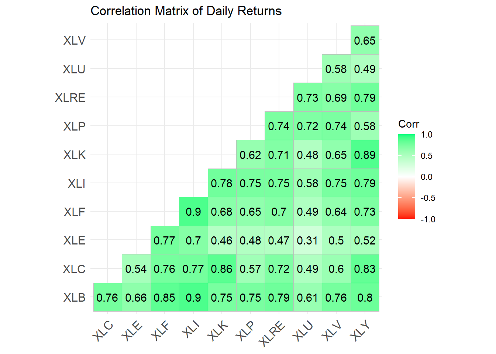
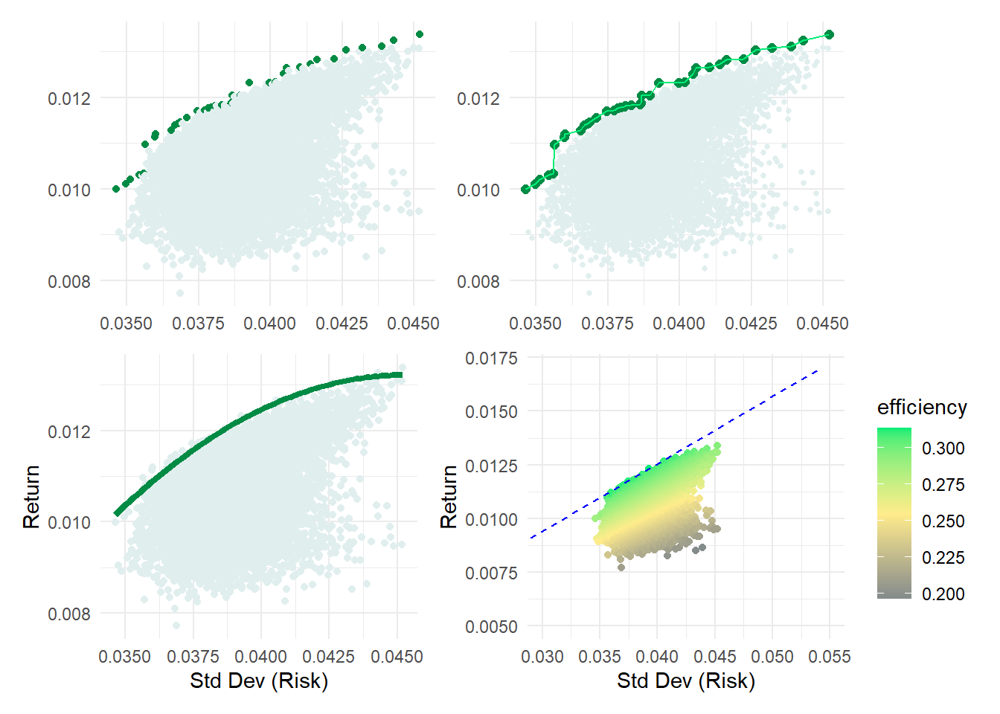

library(tidyverse)
library(tidyquant)
# library(dplyr); library(tidyr); library(purrr)
# library(ggplot)Contents
- Define the sets of stocks/indices
- Retrieve returns for each periodicity
- Analyze: add the analysis list column
- Setup the simulation
- Run the simulation
- Visualize
load libraries
Define the SETS of stocks/indices
The container in this approach is stock_sets, a dataframe the we initialize (our TOC) with three columns:
- set_id
- description
- symbols: a list of tickers
sector_3eft_list <- c( "XLK", "XLV", "XLP") # Tech, Health, Staples
# sector_4etf_list <- c( "XLK", "XLV", "XLP", "XLE",) # Tech, Health, Staples, Energy
sector_5etf_list <- c( "XLK", "XLV", "XLP", "XLE", "XLF") # Tech, Health, Staples, Energy, Financials
# sector_7etf_list <- c(sector_5etf_list, "XLI", "XLU")
sector_11etf_list <- c("XLK", # Technology
"XLV", # Health Care
"XLF", # Financials
"XLY", # Consumer Discretionary
"XLP", # Consumer Staples
"XLE", # Energy
"XLU", # Utilities
"XLI", # Industrials
"XLB", # Materials
"XLRE", # Real Estate
"XLC") # Communication Services
size_etfs <- c("SPY", "MDY", "IWM") # Large, Mid, Small
# size_style_etfs <- c("IWF", # Large-Cap Growth
# "IWD", # Large-Cap Value
# "SPY", # Large-Cap Blend
# "IWP", # Mid-Cap Growth
# "IWS", # Mid-Cap Value
# "MDY", # Mid-Cap Blend
# "IWO", # Small-Cap Growth
# "IWN", # Small-Cap Value
# "IWM") # Small-Cap Blend
stock_sets <- tibble(
set_id = c("3_sectors",
"5_sectors",
"11_sectors",
"3_sizes"),
description = c("3 Sectors picked by GPT-4: Tech, Health, Staples",
"5 Sectors picked by GPT-4: above + Energy + Financials",
"All 11 Sectors",
"Size: Large, Mid, Small--Blend"),
# this is a list column, see https://adv-r.hadley.nz/vectors-chap.html#list-columns
symbols = list(sector_3eft_list, sector_5etf_list, sector_11etf_list, size_etfs)
)
date_start <- "2013-01-01"
date_end <- "2023-11-17"Retrieve returns for each periodicity; aka, frequency
For each SET of tickers, get_returns will retrieve log returns for each of three periods:
- daily
- weekly
- monthly
Then we will call the get_returns function via map (my favorite function) to create a new list column called nested_data. Each row of nested_data will contain a list of three dataframes, one for each period. These dataframes will contain the log returns for each ticker in the set.
get_returns <- function(symbols, start_date, end_date) {
mult_stocks <- tq_get(symbols, get = "stock.prices",
from = start_date, to = end_date)
periods <- c("daily", "weekly", "monthly")
returns_list <- lapply(periods, function(period) {
mult_stocks |>
group_by(symbol) |>
tq_transmute(select = adjusted,
mutate_fun = periodReturn,
period = period,
type = "log")
})
names(returns_list) <- periods
return(returns_list)
}
# Nest return data for each stock set
stock_sets <- stock_sets |>
mutate(nested_data = map(symbols,
~ get_returns(.x, date_start, date_end)))
print(stock_sets)# A tibble: 4 × 4
set_id description symbols nested_data
<chr> <chr> <list> <list>
1 3_sectors 3 Sectors picked by GPT-4: Tech, Health, Stap… <chr> <named list>
2 5_sectors 5 Sectors picked by GPT-4: above + Energy + F… <chr> <named list>
3 11_sectors All 11 Sectors <chr> <named list>
4 3_sizes Size: Large, Mid, Small--Blend <chr> <named list>Analyze: add the analysis list column
For each set and periodicity, the analysis list column generates:
- vector of volatilities
- vector of average returns
- correlation matrix (diagonal is 1)
- average correlation (as a rough measure of diversification)
perform_analysis <- function(data, returns_column) {
# Sort the data by symbol and date
data_sorted <- data |> arrange(symbol, date)
volatilities <- data_sorted |>
group_by(symbol) |>
summarise(volatility = sd(.data[[returns_column]], na.rm = TRUE)) |>
ungroup()
avg_returns <- data_sorted |>
group_by(symbol) |>
summarise(avg_return = mean(.data[[returns_column]], na.rm = TRUE)) |>
ungroup()
# Pivot to wide format for correlation matrix calculation
# Ensuring the data is sorted correctly helps in keeping the order of symbols consistent
data_wide <- data_sorted |>
pivot_wider(names_from = symbol, values_from = .data[[returns_column]])
corr_matrix <- cor(select(data_wide, -date), use = "complete.obs")
# Calculate average correlation
avg_corr <- mean(corr_matrix[lower.tri(corr_matrix)])
return(list(volatilities = volatilities, avg_returns = avg_returns, corr_matrix = corr_matrix, avg_corr = avg_corr))
}
# Applying the perform_analysis function to the stock_sets
stock_sets <- stock_sets |>
mutate(analysis = map(nested_data, ~ {
data_daily <- .x$daily
data_weekly <- .x$weekly
data_monthly <- .x$monthly
analysis_daily <- perform_analysis(data_daily, "daily.returns")
analysis_weekly <- perform_analysis(data_weekly, "weekly.returns")
analysis_monthly <- perform_analysis(data_monthly, "monthly.returns")
list(daily = analysis_daily, weekly = analysis_weekly, monthly = analysis_monthly)
}))
# Examine data structure
print(stock_sets) # Notice the analysis list column has been added# A tibble: 4 × 5
set_id description symbols nested_data analysis
<chr> <chr> <list> <list> <list>
1 3_sectors 3 Sectors picked by GPT-4: Tech,… <chr> <named list> <named list>
2 5_sectors 5 Sectors picked by GPT-4: above… <chr> <named list> <named list>
3 11_sectors All 11 Sectors <chr> <named list> <named list>
4 3_sizes Size: Large, Mid, Small--Blend <chr> <named list> <named list>glimpse(stock_sets)Rows: 4
Columns: 5
$ set_id <chr> "3_sectors", "5_sectors", "11_sectors", "3_sizes"
$ description <chr> "3 Sectors picked by GPT-4: Tech, Health, Staples", "5 Sec…
$ symbols <list> <"XLK", "XLV", "XLP">, <"XLK", "XLV", "XLP", "XLE", "XLF">…
$ nested_data <list> [[<grouped_df[8217 x 3]>], [<grouped_df[1704 x 3]>], [<gr…
$ analysis <list> [[[<tbl_df[3 x 2]>], [<tbl_df[3 x 2]>], <<matrix[3 x 3]>>…stock_sets$analysis[[1]] # first row is the first stock set$daily
$daily$volatilities
# A tibble: 3 × 2
symbol volatility
<chr> <dbl>
1 XLK 0.0138
2 XLP 0.00906
3 XLV 0.0105
$daily$avg_returns
# A tibble: 3 × 2
symbol avg_return
<chr> <dbl>
1 XLK 0.000719
2 XLP 0.000345
3 XLV 0.000484
$daily$corr_matrix
XLK XLP XLV
XLK 1.0000000 0.6357679 0.7254975
XLP 0.6357679 1.0000000 0.7182656
XLV 0.7254975 0.7182656 1.0000000
$daily$avg_corr
[1] 0.693177
$weekly
$weekly$volatilities
# A tibble: 3 × 2
symbol volatility
<chr> <dbl>
1 XLK 0.0270
2 XLP 0.0194
3 XLV 0.0227
$weekly$avg_returns
# A tibble: 3 × 2
symbol avg_return
<chr> <dbl>
1 XLK 0.00347
2 XLP 0.00167
3 XLV 0.00233
$weekly$corr_matrix
XLK XLP XLV
XLK 1.0000000 0.6515029 0.6976196
XLP 0.6515029 1.0000000 0.7046559
XLV 0.6976196 0.7046559 1.0000000
$weekly$avg_corr
[1] 0.6845928
$monthly
$monthly$volatilities
# A tibble: 3 × 2
symbol volatility
<chr> <dbl>
1 XLK 0.0517
2 XLP 0.0364
3 XLV 0.0399
$monthly$avg_returns
# A tibble: 3 × 2
symbol avg_return
<chr> <dbl>
1 XLK 0.0150
2 XLP 0.00722
3 XLV 0.0101
$monthly$corr_matrix
XLK XLP XLV
XLK 1.0000000 0.5679382 0.6136564
XLP 0.5679382 1.0000000 0.6780580
XLV 0.6136564 0.6780580 1.0000000
$monthly$avg_corr
[1] 0.6198842# Selecting the desired set (e.g., "Set 1")
select_set <- stock_sets |>
filter(set_id == "11_sectors") |>
pull("analysis")
analyze_set <- select_set[[1]]
analyze_period <- analyze_set$monthly
# Extracting components from the selected set
exp_returns_period <- analyze_period$avg_returns$avg_return
names(exp_returns_period) <- analyze_period$avg_returns$symbol
volatilities_period <- analyze_period$volatilities$volatility
names(volatilities_period) <- analyze_period$volatilities$symbol
corr_matrix_period <- analyze_period$corr_matrix
num_stocks_period <- length(volatilities_period)Correlation
library(ggcorrplot)
library(MASS)
library(patchwork)
cp1 <- corr_matrix_period |> ggcorrplot(
method = "square",
type = "lower",
lab = TRUE,
colors = c("red", "white", "springgreen"),
title = "Correlation Matrix of Daily Returns")
cp1
Desirability
calculate_desirability <- function(exp_returns, volatilities, corr_matrix, A, risk_free_rate, utility_weight, sharpe_weight, correlation_weight) {
if(is.null(names(exp_returns)) || is.null(names(volatilities))) {
stop("Expected returns and volatilities must have names.")
}
# Ensure the lengths match
if(length(exp_returns) != length(volatilities) || length(exp_returns) != nrow(corr_matrix)) {
stop("Lengths of returns, volatilities, and correlation matrix do not match.")
}
# Ensure the lengths match
if(length(exp_returns) != length(volatilities) || length(exp_returns) != nrow(corr_matrix)) {
stop("Lengths of returns, volatilities, and correlation matrix do not match.")
}
# Calculate the variance as the square of volatility
variance <- volatilities^2
# Calculate the utility for each sector
utility <- exp_returns - 0.5 * A * variance
# Calculate the Sharpe ratio for each sector
sharpe_ratio <- (exp_returns - risk_free_rate) / volatilities
# Calculate the average correlation for each sector
avg_correlation <- apply(corr_matrix, 1, function(x) mean(x[-which(x == 1)], na.rm = TRUE))
write.matrix(corr_matrix, "avg_correlation.csv", sep = ",")
# Calculate the desirability score
desirability_score <- utility_weight * (utility * 100) +
sharpe_weight * (sharpe_ratio * 3 ) -
correlation_weight * avg_correlation # Negative because lower correlation is better
# Create a data frame for sector desirability
desirability_df <- data.frame(sector = names(exp_returns),
exp_returns = exp_returns,
volatilities = volatilities,
utility = utility,
sharpe_ratio = sharpe_ratio,
avg_correlation = avg_correlation,
desirability_score = desirability_score)
# Sort by desirability score
desirability_df <- desirability_df[order(-desirability_df$desirability_score),]
return(desirability_df)
}
# Example parameters
A <- 3 # Risk aversion coefficient
risk_free_rate <- 0.0 # Risk-free rate
utility_weight <- 0.3
sharpe_weight <- 0.4
correlation_weight <- 0.3
# Calculate desirability using the extracted components
sector_desirability <- calculate_desirability(exp_returns_period, volatilities_period, corr_matrix_period, A, risk_free_rate, utility_weight, sharpe_weight, correlation_weight)
sector_desirability sector exp_returns volatilities utility sharpe_ratio avg_correlation
XLK XLK 0.015025342 0.05165266 0.0110233459 0.29089192 0.6885434
XLV XLV 0.010114015 0.03991406 0.0077243160 0.25339477 0.6580335
XLY XLY 0.010399520 0.05421595 0.0059904665 0.19181662 0.7084905
XLP XLP 0.007222011 0.03642463 0.0052318807 0.19827274 0.6588569
XLU XLU 0.007008193 0.04345244 0.0041760216 0.16128423 0.5483552
XLI XLI 0.009141406 0.05120984 0.0052077349 0.17850879 0.7663516
XLF XLF 0.008677509 0.05444007 0.0042319278 0.15939564 0.7166628
XLB XLB 0.007271933 0.05298609 0.0030606447 0.13724231 0.7629429
XLRE XLRE 0.004606752 0.05011872 0.0008389219 0.09191678 0.7092791
XLC XLC 0.005837405 0.06085228 0.0002829058 0.09592747 0.6907898
XLE XLE 0.004030844 0.08350624 -0.0064290935 0.04826997 0.5421771
desirability_score
XLK 0.47320766
XLV 0.33839315
XLY 0.19734680
XLP 0.19722663
XLU 0.15431518
XLI 0.14053713
XLF 0.10323376
XLB 0.02762725
XLRE -0.07731594
XLC -0.08363680
XLE -0.29760195Setup the simulation
The get_random_weights function returns a dataframe of random weights. Each column is a set of weights for a single simulation. Each row is the weight for a single stock. The weights are normalized so that they sum to 1.
So I’m starting with an incredibly naive approach to the simulation. I’m going to assume that the expected return for each stock is the average return for that stock over the entire period. I’m also going to assume that the volatility for each stock is the average volatility for that stock over the entire period. Most importantly, the only randomness in the simulation is the weights and they are totally naive because they are independent of the analysis. We can’t expect anything like an efficient frontier from the raw scatterplot. However, this will illustrate the future risk/reward trade-off faced by a “totally naive” investor!
# returns a data frame of random weights
# rows = weight per stock; columns = number of simulations
get_random_weights <- function(num_stocks, num_simulations, probabilities) {
set.seed(123)
weights_df <- matrix(nrow = num_stocks, ncol = num_simulations)
for (i in 1:num_simulations) {
# Generate weights influenced by probabilities
weights <- runif(num_stocks) * probabilities
weights_df[, i] <- weights / sum(weights) # Normalize the weights
}
return(as.data.frame(weights_df))
}
# single simulation: given a set of weights, computes the expected return and volatility
port_sim <- function(exp_returns, volatilities, corr_matrix, weights) {
cov_matrix <- outer(volatilities, volatilities) * corr_matrix
port_variance <- t(weights) %*% cov_matrix %*% weights
port_exp_return <- sum(weights * exp_returns)
return(list(exp_returns = exp_returns,
volatilities = volatilities,
cov_matrix = cov_matrix,
corr_matrix = corr_matrix,
port_variance = port_variance,
port_exp_return = port_exp_return))
}
# runs a port_simulation for each column in the weights_df
run_sims <- function(exp_returns, volatilities, corr_matrix, weights_df) {
simulations <- map(1:ncol(weights_df), ~ {
weights_vector <- weights_df[, .x]
port_sim(exp_returns, volatilities, corr_matrix, weights_vector)
})
return(simulations)
}Run the simulation (on a single set)
num_sims <- 10000 # Set the number of simulations
sector_desirability$desirability_score <- pmax(sector_desirability$desirability_score, 0)
total_score <- sum(sector_desirability$desirability_score)
probabilities <- sector_desirability$desirability_score / total_score
random_weights_df_period <- get_random_weights(num_stocks_period, num_sims, probabilities)
sim_results_period <- run_sims(exp_returns_period,
volatilities_period,
corr_matrix_period,
random_weights_df_period)
# Print results of the first simulation
print(sim_results_period[[1]])$exp_returns
XLB XLC XLE XLF XLI XLK
0.007271933 0.005837405 0.004030844 0.008677509 0.009141406 0.015025342
XLP XLRE XLU XLV XLY
0.007222011 0.004606752 0.007008193 0.010114015 0.010399520
$volatilities
XLB XLC XLE XLF XLI XLK XLP
0.05298609 0.06085228 0.08350624 0.05444007 0.05120984 0.05165266 0.03642463
XLRE XLU XLV XLY
0.05011872 0.04345244 0.03991406 0.05421595
$cov_matrix
XLB XLC XLE XLF XLI XLK
XLB 0.002807526 0.002445591 0.002939209 0.002453076 0.002449652 0.002039863
XLC 0.002445591 0.003703000 0.002729728 0.002525212 0.002395695 0.002707615
XLE 0.002939209 0.002729728 0.006973292 0.003519155 0.002980982 0.002003833
XLF 0.002453076 0.002525212 0.003519155 0.002963721 0.002500637 0.001908759
XLI 0.002449652 0.002395695 0.002980982 0.002500637 0.002622447 0.002071542
XLK 0.002039863 0.002707615 0.002003833 0.001908759 0.002071542 0.002667998
XLP 0.001440331 0.001273703 0.001455723 0.001279402 0.001394055 0.001159082
XLRE 0.002086998 0.002209362 0.001960762 0.001904553 0.001926469 0.001842359
XLU 0.001410705 0.001306091 0.001132947 0.001157953 0.001280432 0.001077269
XLV 0.001605595 0.001455557 0.001672473 0.001400932 0.001527509 0.001348071
XLY 0.002309809 0.002730008 0.002369834 0.002144644 0.002204521 0.002493967
XLP XLRE XLU XLV XLY
XLB 0.001440331 0.002086998 0.001410705 0.001605595 0.002309809
XLC 0.001273703 0.002209362 0.001306091 0.001455557 0.002730008
XLE 0.001455723 0.001960762 0.001132947 0.001672473 0.002369834
XLF 0.001279402 0.001904553 0.001157953 0.001400932 0.002144644
XLI 0.001394055 0.001926469 0.001280432 0.001527509 0.002204521
XLK 0.001159082 0.001842359 0.001077269 0.001348071 0.002493967
XLP 0.001326754 0.001352455 0.001134192 0.001080211 0.001145343
XLRE 0.001352455 0.002511886 0.001581032 0.001387531 0.002155425
XLU 0.001134192 0.001581032 0.001888114 0.001013965 0.001160315
XLV 0.001080211 0.001387531 0.001013965 0.001593132 0.001412943
XLY 0.001145343 0.002155425 0.001160315 0.001412943 0.002939369
$corr_matrix
XLB XLC XLE XLF XLI XLK XLP
XLB 1.0000000 0.7584819 0.6642778 0.8504140 0.9027950 0.7453263 0.7462862
XLC 0.7584819 1.0000000 0.5371847 0.7622585 0.7687785 0.8614248 0.5746405
XLE 0.6642778 0.5371847 1.0000000 0.7741067 0.6970871 0.4645686 0.4785911
XLF 0.8504140 0.7622585 0.7741067 1.0000000 0.8969715 0.6787967 0.6451982
XLI 0.9027950 0.7687785 0.6970871 0.8969715 1.0000000 0.7831547 0.7473627
XLK 0.7453263 0.8614248 0.4645686 0.6787967 0.7831547 1.0000000 0.6160648
XLP 0.7462862 0.5746405 0.4785911 0.6451982 0.7473627 0.6160648 1.0000000
XLRE 0.7858870 0.7244194 0.4684961 0.6980305 0.7506003 0.7116746 0.7408458
XLU 0.6127171 0.4939495 0.3122313 0.4895063 0.5754254 0.4799737 0.7166010
XLV 0.7591859 0.5992755 0.5017812 0.6447219 0.7473162 0.6538742 0.7429981
XLY 0.8040577 0.8274848 0.5234461 0.7266236 0.7940243 0.8905759 0.5799807
XLRE XLU XLV XLY
XLB 0.7858870 0.6127171 0.7591859 0.8040577
XLC 0.7244194 0.4939495 0.5992755 0.8274848
XLE 0.4684961 0.3122313 0.5017812 0.5234461
XLF 0.6980305 0.4895063 0.6447219 0.7266236
XLI 0.7506003 0.5754254 0.7473162 0.7940243
XLK 0.7116746 0.4799737 0.6538742 0.8905759
XLP 0.7408458 0.7166010 0.7429981 0.5799807
XLRE 1.0000000 0.7259829 0.6936121 0.7932422
XLU 0.7259829 1.0000000 0.5846324 0.4925322
XLV 0.6936121 0.5846324 1.0000000 0.6529376
XLY 0.7932422 0.4925322 0.6529376 1.0000000
$port_variance
[,1]
[1,] 0.002567196
$port_exp_return
[1] 0.007106525results_df_period <- map_dfr(sim_results_period, ~ data.frame(Exp_Return = .x$port_exp_return,
Std_Dev = sqrt(.x$port_variance)))
# View summarized results for daily returns
print(head(results_df_period)) Exp_Return Std_Dev
1 0.007106525 0.05066750
2 0.007058208 0.05249469
3 0.007349765 0.05167136
4 0.007666882 0.05147461
5 0.009318553 0.04969520
6 0.008069111 0.05307626results_df <- results_df_periodVisualize the results
library(patchwork)
results_df <- results_df |>
arrange(Std_Dev) |>
mutate(is_efficient = Exp_Return >= cummax(Exp_Return))
efficient_portfolios <- results_df |>
arrange(Std_Dev) |>
mutate(cummax_return = cummax(Exp_Return)) |>
filter(Exp_Return >= cummax_return)
efficient_model <- lm(Exp_Return ~ poly(Std_Dev, 2), data = efficient_portfolios)
p1 <- ggplot(results_df, aes(x = Std_Dev, y = Exp_Return, color = is_efficient)) +
geom_point() +
scale_color_manual(values = c("azure2", "springgreen4")) +
theme_minimal() +
theme(
axis.title = element_blank(),
legend.position = "none"
)
p2 <- ggplot(results_df, aes(x = Std_Dev, y = Exp_Return)) +
geom_point(aes(color = is_efficient), size = 1) + # Default size for all points
geom_point(data = filter(results_df, is_efficient),
aes(color = is_efficient), size = 2) + # Larger size for efficient points
scale_color_manual(values = c("azure2", "springgreen4")) +
theme_minimal() +
geom_line(data = efficient_portfolios, aes(x = Std_Dev, y = Exp_Return), colour = "springgreen2") +
theme(
axis.title = element_blank(),
legend.position = "none"
)
p3 <- ggplot(results_df, aes(x = Std_Dev, y = Exp_Return)) +
geom_point(color = "azure2") +
geom_smooth(data = efficient_portfolios, method = "lm", formula = y ~ poly(x, 2),
se = FALSE, colour = "springgreen4", linewidth = 1.5) +
labs(x = "Std Dev (Risk)",
y = "Return") +
theme_minimal()
# Calculate a color metric based on Exp_Return and Std_Dev
RiskFree_temp <- 0.0
results_df <- results_df %>%
mutate(efficiency = (Exp_Return - RiskFree_temp)/ Std_Dev)
# Create a scatterplot with color gradient based on the color_metric
# p4 <- ggplot(results_df, aes(x = Std_Dev, y = Exp_Return, color = color_metric)) +
# geom_point() +
# scale_color_gradient2(low = "azure3", high = "springgreen1", mid = "yellow",
# midpoint = median(results_df$color_metric)) +
# theme_minimal() +
# labs(color = "Color Metric")
# Assuming results_df and color_metric are already defined appropriately
p4 <- ggplot(results_df, aes(x = Std_Dev, y = Exp_Return, color = efficiency)) +
geom_point() +
scale_color_gradientn(colors = c("azure4", "lightgoldenrod1", "springgreen2"),
values = scales::rescale(c(min(results_df$efficiency),
max(results_df$efficiency)))) +
theme_minimal() +
labs(x = "Std Dev (Risk)",
y = "Return",
color = "efficiency")
(p1 + p2) / (p3 + p4 )